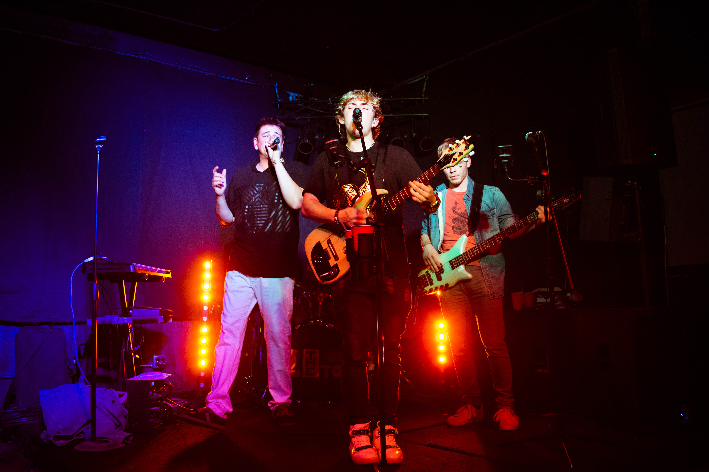

My name is Cody Hodgins. I grew up in Holyoke, MA and received my Bachelor's in Applied Mathematics from American University. I worked for the White House Office of National Drug Control Policy programming with SAS, a statistical software. Upon graduating, I was a programmer for Hampshire and Mount Holyoke College a few years after. I am now a software analyst for Ellucian, a company that provides software to higher education institutions.
In my free time, I sing and play the guitar. I am also a pilot working towards my Commercial License. My friends and I have built and programmed a flight simulator that is located at Westfield Barnes Regional Airport. We are in the process of gaining FAA approval for the simulator, in which case pilots can then log flight hours in the simulator towards their ratings, thus saving them time and money.
